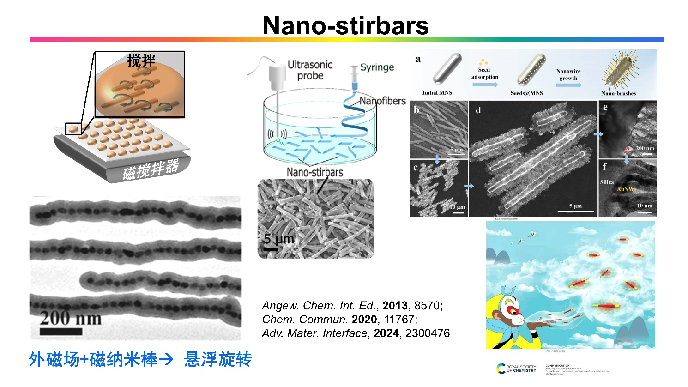
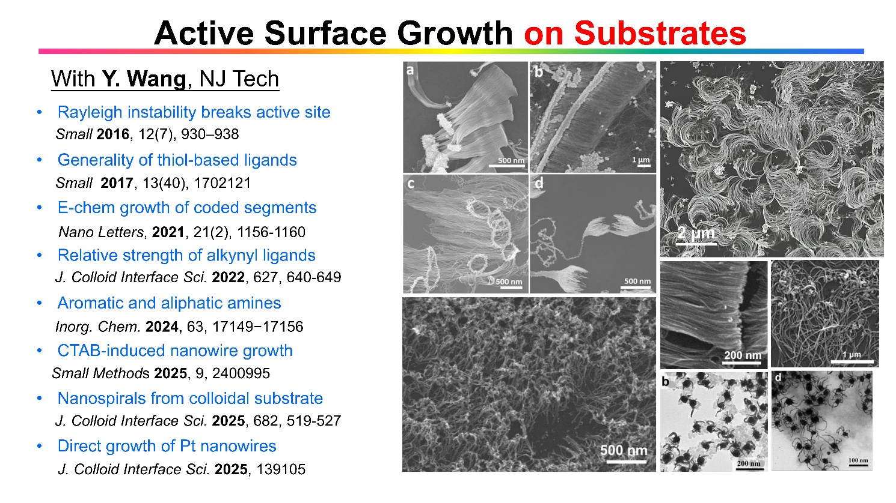
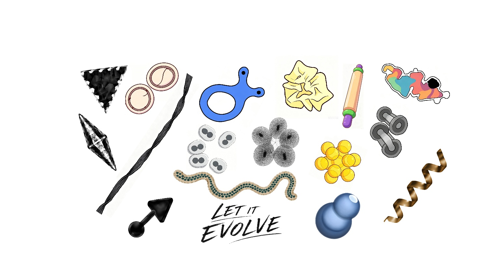

一眨眼就是20年，我在纳米合成这条路上走了很久，提升了一些纳米尺度的合成控制力，理解到了其中的独特机理。没有鲜花和掌声，只是我自己觉得特别有意义。
我认为科学的大厦是由知识的砖块堆起来的。这个“知识”，可以是“这么做能成功”这种路径探索的经验，也可以是“讲明白怎么回事”这种机理的理解，还可以是更抽象，理论化，体系化的规律总结。
有人认为基础的理论更重要，有人认为应用的展示更重要，而我有些偏执不走寻常路，更愿意跟随自己的兴趣，探索机理并发展新型纳米合成方法。具体讲就是从传统理论无法解释的特殊形貌现象入手，探索其合成边界脑补出化学图景，进而提出并验证相关假设；然后从机理出发，设计新的路径和手段，实现一系列新型纳米结构特征。
科普一点的话，就是我们通过对比实验，能猜到纳米尺度的变化过程，然后设计出新的“魔法”：这样那样加点化学药品，就在溶液中生成别人做不出来的，奇奇怪怪的纳米结构。
“为什么不做应用？” 这么些年来，其实我还是做了不少应用相关的探索，比如SERS，催化，药物缓释，光热效应，光电效应等等，也发了不少好文章，但这些工作不能算是我的主轴，我也不认为这些性能提升最后会改变世界，所谓“好一点”的文章已经太多了。这么说吧，有机化学的合成控制力好比是一棵树，长大后才能随心所欲合成出各种复杂的有机分子，比如药物分子，然后结出许多应用的果子。那么，纳米合成也是一样，我是希望这棵小树能尽快长大，这里那里摘点果子很难形成连贯的故事，也显不出我的水平。纳米合成控制力的提升才是我工作的主轴，还有内在千丝万缕的机理理解。
“为什么不深入做理论？” 我也想啊。但第一我不是那块料，第二纳米合成处于发展的早期，许多基本的情况大家都还不太了解。我认为首要是找到关键的机理线索（见下），讲明白发生了什么，才有机会归纳总结。而且我觉得要求做合成的搞理论有点过分，你看有机化学发展了那么多年，有没有大一统的理论可以概括大部分合成机理？还不是厚厚一本书，这样那样好多种人名反应，反应路径的选择千变万化。我反正比较土，那就慢慢地搞自己能搞通的机理就好。
在我的世界里，除了“应用导向的科研”，还有“控制力导向的科研”，机理的理解、合成控制力的提升未必马上就能结出果子，但是总体来说提升了人类“指哪打哪”的控制力，将来总会有应用的嘛。
我是这么理解“指哪打哪”的：所谓的意外发现，好比是你射了一支箭，然后跑落点上画一个靶子，写成一篇文章。关键的下一步，是你能否理解内在的原理，第二支箭能否射到这个靶子的附近目标。这种在靶子内或附近的指哪打哪，就是合成控制力提升的证据。随着这种发现越来越多，有些意外有些设计出来的，慢慢填满了一面墙，才有更广泛意义上的指哪打哪。类比一下，如果有机化学的人名反应是一个个靶子，其衍生反应越多，靶子面积越大，那么当这些靶子互相覆盖连成一片的时候，就是有机合成进入自由王国的时候。
下面，我大概总结了过去20年涉及的合成方法，纳米结构比较直观，所以展示的都是一些TEM、SEM图像，真正的科学知识隐藏在合成控制力上：因为我的纳米结构比较好看、一致、系统化（篇幅有限没有放大图），所以你得相信我基本搞明白了。对具体机理有兴趣的话可以读论文，比较繁杂哈，不是一篇公众号能搞定的。
我博士期间是做无机化学的，主要做锰的化合物合成和水的催化氧化；博士后的课题组做微生物学的，用细菌合成人类抗体片段。我在博后期间真正开始做纳米合成，想在纳米颗粒表面做一层稳定的壳，用以连接抗体。然后我发现，做一个壳谈何容易，文献的方法都不太靠谱，得到的颗粒也不稳定，有太多的地方搞不明白。在NTU独立工作之后，我首先想到的就是怎么把这个壳做靠谱，也就是普适、稳定的包覆方法，于是慢慢地在纳米合成方向越跑越远。

那时候，我经常说“我是包公”，因为啥啥纳米颗粒我都想包起来，当然也没想到这条路可以走那么远。最早玩的是两亲性嵌段聚合物PSPAA，这种分子的一段特别亲水，一段特别憎水，在溶液里会像肥皂分子那样自组装，憎水的攒在内核，亲水的朝外。如果把纳米颗粒表面修饰憎水基团，在合适的条件下就能组装形成稳定的核壳结构。这里的核心问题是动力学-热力学控制的区分：怎么让高分子有足够的时间和动能组装到能量最低状态，而不是跑一半卡在一个不舒展的中间状态。
这点搞明白了，还有各种纳米颗粒的表面配体置换，以及各种材料的壳形成过程的控制问题。比如导电高分子和氧化硅的壳是动力学控制的，纳米颗粒表面的配体要合适，一边要抓得住纳米颗粒（不能太强），一边要跟壳材料有足够亲和力；溶剂的溶解性要合适，要不然纳米颗粒会聚集；然后壳材料的沉积速率不能太快，不能自成核造成竞争，等等等等。

然后就有偶然发现，有时候会包一半，形成Janus纳米结构，这类结构是早年很多人想合成的，一直搞不好。一般来说合成几个好看的颗粒比较容易，所以文献中的TEM一般都只给看几个颗粒，大面积均匀的Janus颗粒是极难的。我们最早的策略是利用配体竞争，让纳米颗粒表面同时有亲水和憎水的分子，表面相分离形成两大块，然后就能合成漂亮的Janus结构。后面想通了，就针对性发展不同的Janus结构合成方法，比如利用金属离子穿透高分子壳的不均匀扩散，比如利用成核瞬间的“消耗球理论”，还有固-固界面的选择性调控，等等。
这一块的核心问题仍是热力学控制问题：动力学控制下，每个颗粒很难完全一致，产率低样品就很难看；热力学控制下，每个颗粒都趋向同一种构象（包覆程度上），于是产率就高。PSPAA壳在溶胀条件下接近液态，很容易到达平衡点；意外的是，固态的壳比如银壳，氧化亚铜壳或氧化硅壳，只要沉积速率足够慢，体系也会趋向能量最低态。这个最低态说白了就是浸润效应：我们把银想象成液体，平衡态时，银跟纳米颗粒表面的浸润程度高，得到核壳结构；浸润程度低，就得到Janus结构；于是Janus合成就转化成较容易的界面调控问题。

包覆的一个好处，是可以用来做分离。当时的一个热点是合成两个纳米颗粒的dimer，一般产率很低。我们的PSPAA壳表面全是带负电的高分子，可以在浓盐水里稳定，所以就可以利用溶液的密度差进行分离，得到高纯度dimer样品，现在还是世界纪录。我们用这种dimer来估算SERS热点的相对强度，也利用dimer作为种子来生长氧化锌纳米线的dimer。然后，用两类纳米颗粒之间的成键，结合分离方法，还可以合成各种化学计量比（1:1；1:2；1:3等）的组装体。这里的难点，一个是发展分离方法，一个是了解发生聚集时，主导的是纳米颗粒之间的电荷排斥力。

再进一步，稳定的PSPAA壳包覆可以看成是聚集过程中，抓取中间体的新颖手段。所以我们研究了纳米颗粒之间碰撞聚集过程的动力学，了解到颗粒链形成过程中电荷排斥是主导因素，也弄明白了团状聚集和链状聚集的本质区别（电荷排斥vs空间位阻），还发展了用冰晶间空隙作为合成手段的新型组装模式。

均匀的壳层，还可以用来操控溶液中悬浮的纳米线。要是咱碰不到纳米线，就无法改变其状态；一旦可以长上均匀的壳层，之前和之后的状态差异，就可以利用起来。具体是利用高分子壳的溶胀效应：高DMF比例溶液中，PSPAA层高度溶胀，像一层油一样附着在纳米线表面；溶液加水稀释后，表面能增加，高分子层收缩，过程中就把包覆在内的纳米线卷曲成圈。这个方法还可以让纳米圈在压扁和弹开两种状态多次切换。
这里的本质问题是纳米线的“选择”：呆在PSPAA“油”里的坏处是弯曲造成的张力，好处是相互作用能或者说溶解能。想明白这个问题，就可以摆脱高分子壳，直接用油滴形成乳液，然后设计体系让碳纳米管（或钯线等）选择呆在空间受限的微油滴里，于是溶液中所有的纳米线都受迫弯曲成圈，建立了可靠的合成方法。
我们还意外发现，超细金-银合金纳米线生长金壳的时候，会扭曲形成麻花结构。这个机理比较复杂，得看图，就不展开了，简单讲就是双股BCB结构的纳米线变厚之后，会通过扭转来寻求更低的能量状态。那么，我们先让纳米线聚集成束，再给扭转的反应条件，就可以形成一束扭转的绳子结构。这种扭转的纳米线不知道为啥没人做，到现在只有我们这一个体系。

纳米线的手性是很受关注的一个方向，但这里一开始做的都是外消旋的，即体系中的螺旋线一半左旋一半右旋。手性的机理像上面说的，没有统一的机理，我们有个综述，感兴趣的可以读读，这里不展开了。我们创新的有三个体系，超细金纳米线的BCB结构；慢速刻蚀银纳米棒形成的手性凹槽；还有活性生长（见下）时不均匀“挤出”形成的螺旋结构。

在玩氧化硅包覆的时候，发现可以选择性刻蚀其内部形成空心结构，仔细对照了所有文献里的说法，都不能很好解释，所以就认真研究了一下。简单来说，氧化硅沉淀前形成的聚硅酸是高度被水溶胀的无机高分子，就像其他的阴离子高分子，其沉淀取决于溶液的非极性（得加有机溶液，如乙醇），以及抗衡阳离子（得有铵离子或盐）。反应早期形成的无机聚合物链相对较长，会吸附更多的阳离子；后期形成的壳含阳离子少，交联度高；阳离子掺杂多的部分相当于自带碱，更容易溶解，所以这类氧化硅颗粒可以选择性刻蚀内部形成空心结构。
这点想明白了，就可以设计很多合成方法上的变化，比如拿二价钙离子做沉淀剂，可以让生物高分子一起沉淀下来，然后简单水洗就能形成包含生物分子的空心结构；可以用氢离子进行离子交换，跟净水器里的聚电解质一个道理，能提高氧化硅的交联度，减缓其刻蚀；也可以用荧光的有机阳离子跟聚硅酸进行共沉淀，形成带各种颜色荧光的纳米球。我相信这种有机-无机共沉淀在生物应用上会很有前景。

利用氧化硅包覆的稳定作用，我们发展了纳米搅拌子的概念。一般的宏观搅拌子都是毫米级的，不能在微液滴里搅拌。我们使磁纳米颗粒在外磁场中组装成链，然后包覆氧化硅壳，这种小到看不见的搅拌子可以在普通搅拌台上旋转，使微液滴或微流控中的液体能均匀混合。可以在氧化硅上生长金纳米线森林（见下），增加其阻力，用来测微液滴的粘度。利用电纺丝，可以放大合成微米搅拌子。这个概念进一步用来做催化和生物应用，其他课题组有不少后续工作。

近十年来，我们包覆相关的工作慢慢少了，主攻活性生长法。这是一种金/银体系中发现的新的生长模式：利用强配体和金属的快速沉积，使配体“来不及”形成均匀一致的抑制层，从而使生长聚焦在活性位点，打破结构的对称性。可以把这种反应类型类比为纳米领域的“人名反应”，与传统的晶面调控完全不同，利用沉积生长过程中的活性位点，创造全新且丰富的合成控制力。
相比传统方法合成的形貌规范、高度对称的纳米颗粒，这个体系可以生成各种奇特结构。比如在纳米棒尖端的活性位点长一个三角，形成箭头；利用手性的小分子强配体，合成手性图案或纳米螺旋桨；也可以利用刻蚀时的活性位点，形成带锯齿的边；或者在少数位点聚焦刻蚀，形成穿透的孔洞，开发出各种新颖的刻蚀模式。我们最新发现，高指数晶面的形成，有可能只是活性生长的一个结果，而不是表面能最低化主导的晶面控制。

活性生长法的一个分支，是在基底上利用“种子”的引导进行单向生长：用强配体抑制所有的裸露金属表面，使沉积选择性发生在种子与基底的交界处，这样就能在基底上长出一片纳米线森林。这个体系也有丰富的结构演化：活性位点在生长中会分裂；可以改变配体的强弱、种类、空间位阻；可以用电化学实现短促的还原序列，形成粗细编码的纳米线；可以形成手性的螺旋；利用氢原子作为抑制配体，还可以直接合成超细铂纳米线阵列，等等。
考虑到这是与基底相连的高比表面形貌，我们尝试用金纳米线森林做有机催化；也试过乙醇的电化学催化氧化，利用纳米线森林的结构特征发现并提出新的机理见解。我觉得做的最成功的一个应用方向，是利用这种互联的纳米导电网络做柔性电极，但这不是我们课题组的功劳，澳洲的CWL教授进一步拓展了这个反应体系，在柔性电极相关方向上发表了100多篇文章。

活性生长的概念可以进一步拓展到液体纳米结构的合成。这里有两个突破，一是溶质诱导相分离（SIPS）：比如说，水和乙醇是无限混溶的，但是盐的加入会造成分相，因为盐水不溶于乙醇。这个现象不新，但我们可以利用SIPS，先形成均相溶液再析出盐水，可引发与固态纳米颗粒类似的成核-生长过程，最后通过包覆，形成超小且均匀的纳米液滴，比传统的乳液要小6-9个数量级。简而言之，SIPS是一种纳米液滴的合成方法。
第二个突破是液滴的活性生长。一般的乳液会聚集融合，但不会生长；SIPS产生的液滴会不断吸收溶液中析出的盐水，从而生长变大。我们发现这种条件下的包覆（氧化硅或C60壳）会发生活性生长：液滴边生长边包覆的过程中，容易产生两极分化，包覆快的区域形成壳层，从而进一步生长变厚；包覆慢的地方吸收更多的溶液，表面积变大，壳层只在界面延伸，从而保持了活性位点的长期动态存在。
这个体系也可以衍生出很多变化，比如盐水可以替换成具有催化能力的金属盐，实现带负载空心结构的一步合成；也可以像共沉淀那样共SIPS；可以多次生长形成多壳层结构；还可以利用盐晶做模板，形成半包覆结构，然后液滴扩张后再包覆，等等。

跟有机化学类似，我们也希望发展纳米合成的多步反应。这里展示了三个体系里的尝试，一个是金纳米结构的活性生长，分成三个阶段，最后形成箭头，上面提到过；一个是利用PSPAA壳在加热后的逐步收缩，结合金属沉积，形成复杂结构；还有一个路线是利用液滴活性生长及C60包覆，形成多节的葫芦，以及利用纳米碗的空间位阻效应，形成二聚体和四聚体。

在纳米合成方法之外，算是一类特殊应用的探索吧，我们课题组一直想测量纳米尺度的扩散速率。早期是在PSPAA壳中负载pyrene分子，利用金核对其荧光的淬灭，以及停留光谱技术（Stopped-flow），观察pyrene扩散造成的荧光变化（此时还不能测量扩散速率）。后期利用HAuCl4部分氧化低聚的聚苯胺壳，从而反推其扩散速率。测得的速率比宏观体系的要慢700多倍，究其原因，是宏观膜的制备涉及有机溶剂溶胀，造成大量的微孔，成为主导扩散的主要因素。在纳米颗粒体系中，也验证了微量有机溶剂对聚苯胺壳的溶胀造成扩散速率的巨大影响。
在这个方向上，最近的突破是摆脱荧光分子或反应性的离子，直接测量无特征溶剂小分子在纳米孔道中的扩散过程，这类纳米尺度的输运扩散（对比热运动主导的自扩散）是常规方法无法测量的。具体是利用有机-无机共沉淀（见上），使荧光阳离子与聚硅酸共沉淀形成纳米颗粒。然后用停留光谱技术，在一毫秒内快速均匀混合两种溶液，之后溶剂扩散进入氧化硅纳米孔道，造成荧光分子的微环境变化，产生荧光信号。由于纳米颗粒大小均一，混合快速，因此可以简化数学模型，准确测定溶剂的扩散速率常数。
这个方向有较好且独到的前景，可以把扩散速率测量看成一个工具，根据应用建立模型体系，发展各种小分子或离子的扩散速率测量方法，并对映研究扩散速率对各种环境参数的依赖性。
篇幅有限，衍生的方法和现象我就不放上来了。上述工作的主轴是合成方法的理性拓展，内在的机理脉络有很多互通的地方，可能在简述中不易看到，比如配体作用，界面效应，溶胀效应，聚集动力学，成核-生长，熟化，对称性/手性，活性位点，晶面控制，曲率效应，缺陷的诱导效应，等等等等，相互影响错综复杂。作为做机理的，我的直觉是在一个简单干净的体系把问题吃透讲清楚，但我最后不得不越做越宽，越做越复杂，拔出萝卜带出泥。当然这也是一个很有趣的过程，每当我们想透了一个问题，总可以相应设计新的合成手段，做出奇奇怪怪的新结构。
化学家有点像炼金术师alkemist，后者就是古代的“魔法师”，反正都是往瓶瓶罐罐里倒几种药品，然后晃一晃，就能变出神奇的东西。从这个角度看，纳米合成很像是魔法，而我一直的工作，就是创造新的魔法，不知道什么时候能用得上，但是很有趣，而且我相信总会有用得上的时候。
